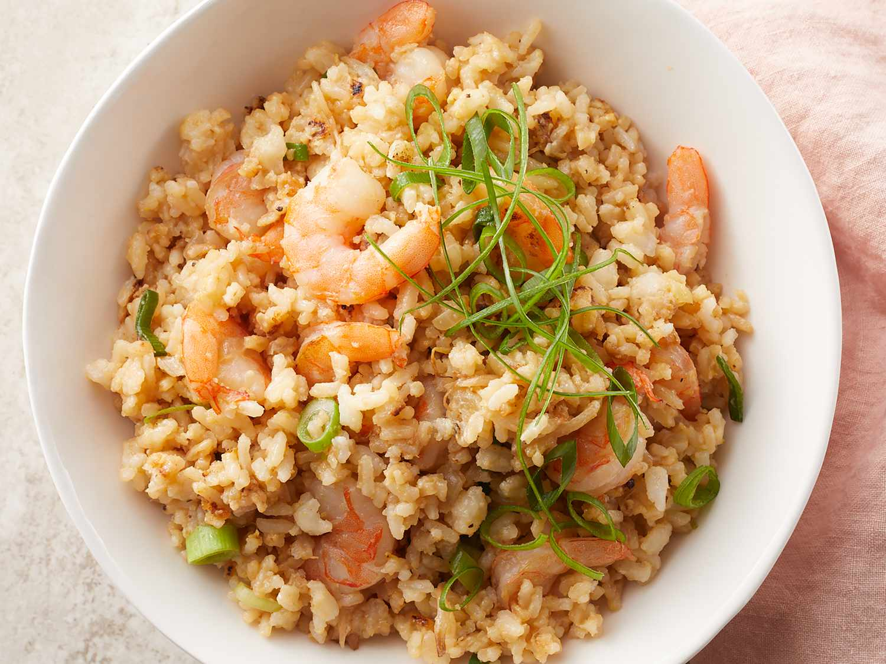

Shrimp Fried Rice

Description:
Learn how to make shrimp fried rice, restaurant style with this recipe
This is how I used to cook real delicious shrimp fried rice when my father still owned a restaurant
Ingredients:
- 3 cups water
- 1 1/2 cups uncooked white rice
- 4 tablespoons vegetable oil
- 1 cup fresh bean sprouts
- 1/2 cup onion, chopped
- 1 1/2 cups cooked medium shrimp (peeled, deveined, without tail)
- 2 large eggs, beaten
- 1/4 cup chopped green onion
- 4 tablespoons soy sauce
- 1 teaspoon salt
- 1/4 teaspoon ground black pepper
- 1/4 teaspoon sesame oil
Steps:
- Gather all the ingredients
-
- Bring water to a boil in a saucepan; add rice and stir
- Reduce heat, cover and simmer for 20 minutes
- Set aside and allow rice to cool
-
- Heat a large skillet or wok for 2 minutes
- Pour in vegetable oil, bean sprouts, and onions; Mix well and cook for 3 minutes
- Mix in cooled rice and shrimp and cook for another 3 minutes, stirring constantly
-
- Add in eggs, green onions, soy sauce, salt, pepper and sesame oil
- Stir continuously for 4 minutes, until everything is blended evenly and the eggs are cooked
- Serve hot and enjoy!
Back to top
Return to home